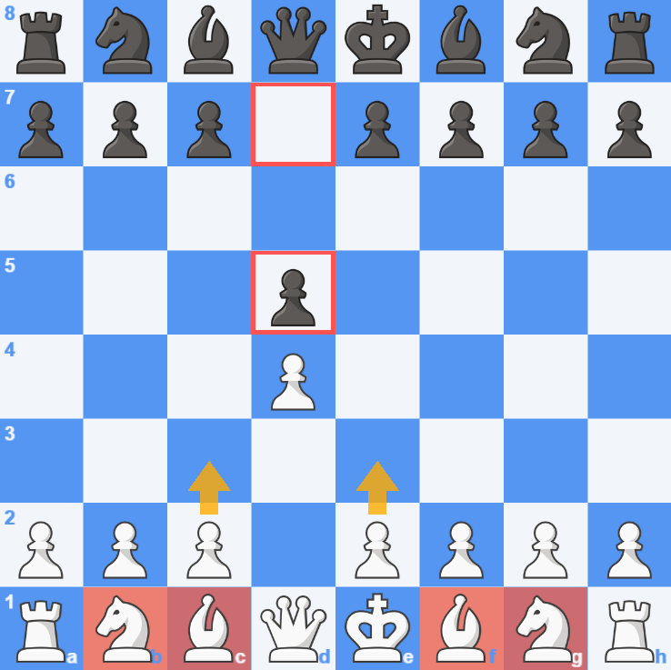
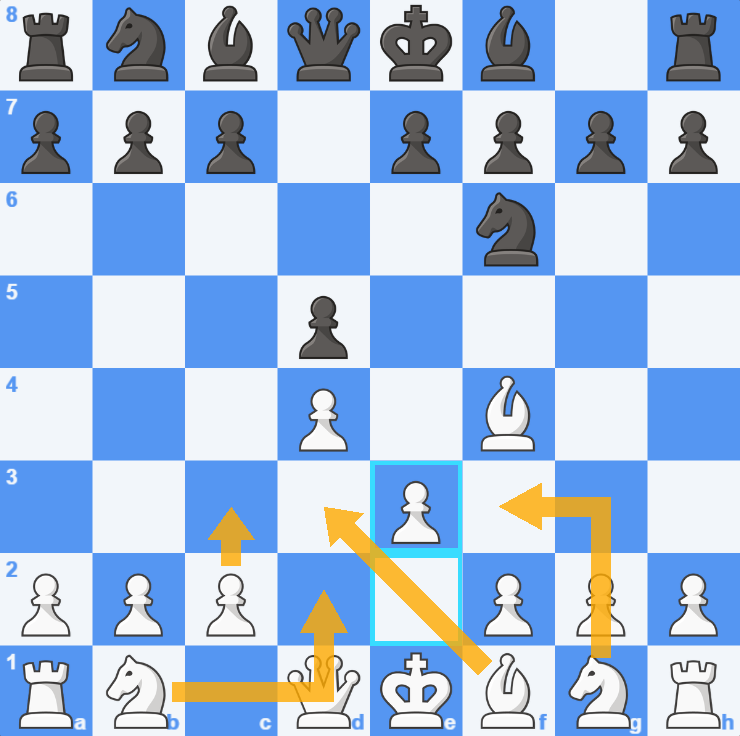
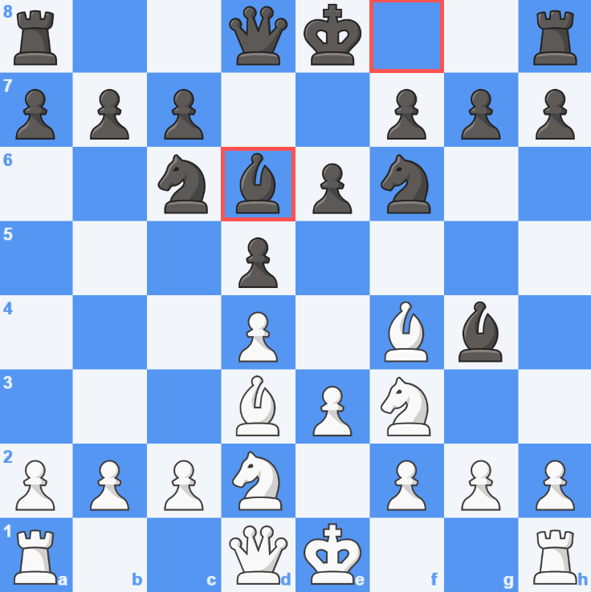
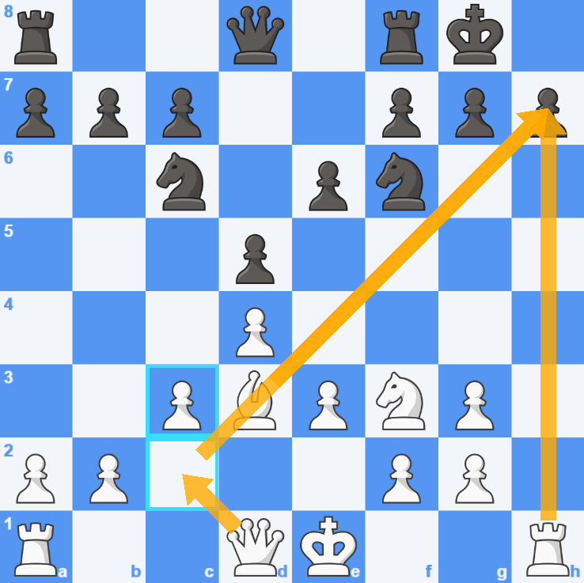

répértoire : système de Londre
Partie 1: Le système de Londre
Après e4,e5 l'idée est de développer ses piece majeur et en faisant une pyramide inverser avec les pions d,e et c

Maintenat que le fou noir est sortie il faut placer son fou blanc en e3 dès que possible puis développer les cavalier et finir sa pyramide inversée de pion

dans cette situation on voit que notre pyramide n'est pas terminé mais notre adversaire à jouer fou d6 ce qui nous emêcher de finir notre pyramide car si on la termine les noirs vont prendre notre fou nous forçant à reprendre et a créer des pions doublés. Ce qui nous laisse le choix ,soit prendre le fou en d6 qui nous menace ou reculer en g2.Pourquoi reculer en g2? Tous simplement car si il mange notre fou en g2 on peut ouvrir un colonne pour la tour

Avec le coup fou g2 , on peut se retrouver avec une position similaire à celle-ci. On voit que on risque de menacer fortement le petit roque du roi noir ce qui est bien pour les blancs car cela empêche le roi blanc de roquer et même si il roque après avoir jouer le coup h6 ,les blancs ont une puissantes attaques sur le roi noir
